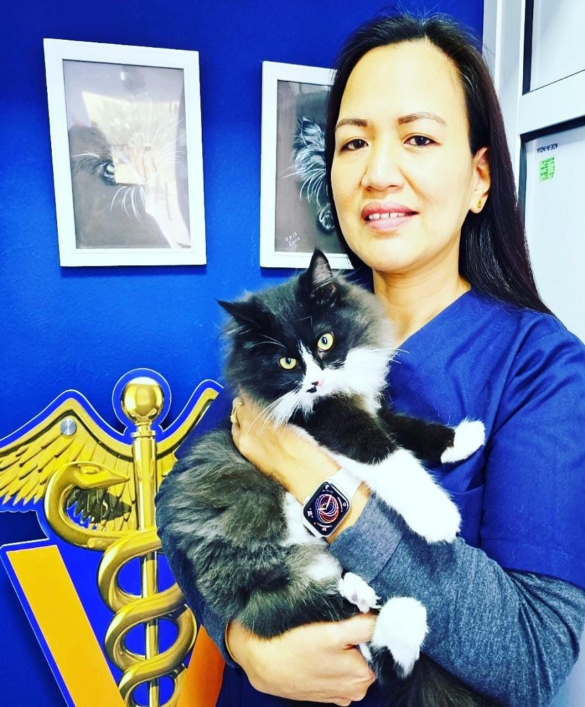
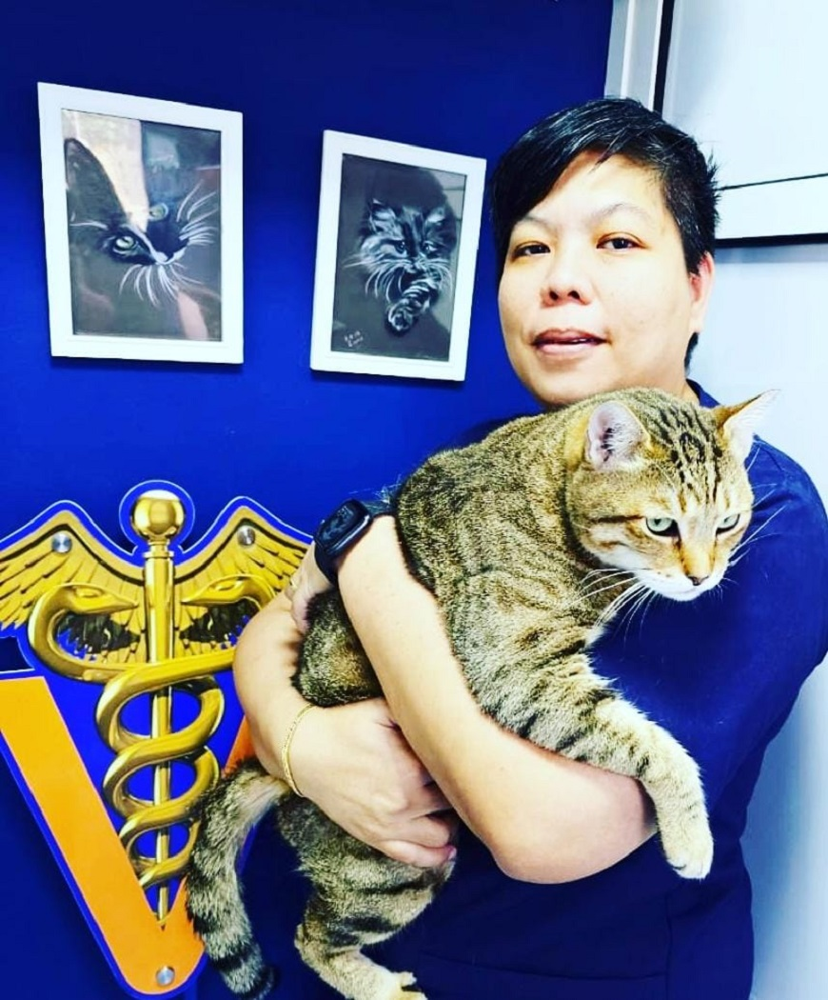
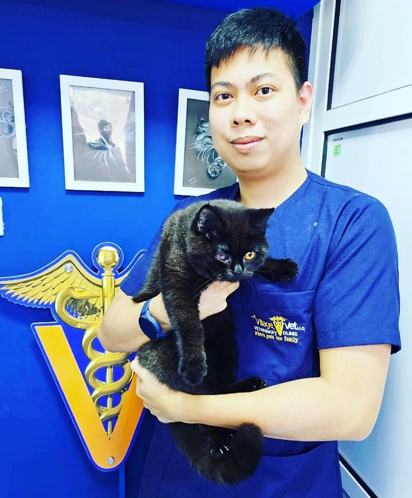
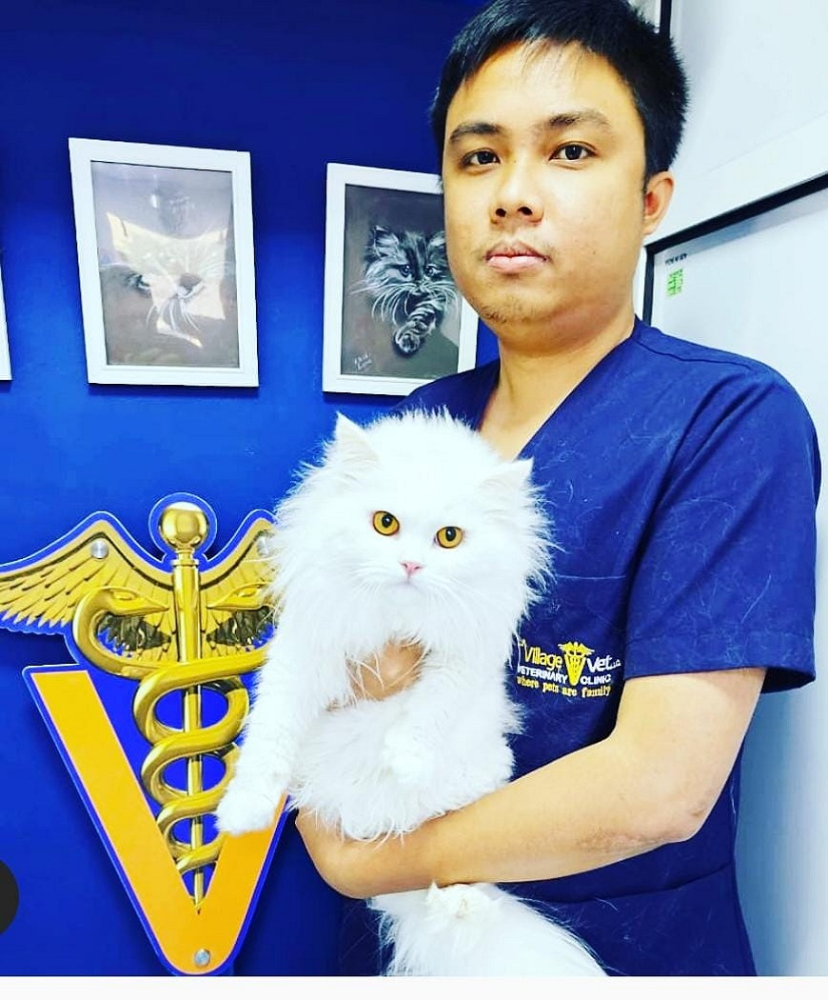

Who we are
Meet The Team




What clients say
Client Testimonials

Omran Alblooshi
I used to take my two cats to an expensive vet in AD that charged me incredibly high and treated my cats with a lot of things, but Village Vet gave us amazing care at a fair price. Highly recommend!
Anna Burenko
Dr. Kutubi is very professional with kindest heart ever AMAZING DOCTOR!!! The team is great too! Me and my cat super happy! Highly recommended!!! BEST VET CLINIC!!!
Noora Muhammad
After a really bad experience with another vet, Dr. Omar literally saved my rabbit's life. He's very professional and good with pets. They also have the nicest and most polite staff.
Nasir Jabbar
The entire staff is very friendly and helpful. Dr. Omer is a thorough gentleman and an angel in Doctor disguise.
Our story
About Us
Our mission is to provide our clients with the very best in pet healthcare.

Village Vet LLC Veterinary Clinic was established In 2016 in Northern Emirates in UAE, Ras al Khaimah city. The clinic is located in the attractive area of Al Hamra close to Al Hamra Mall. It comprehensive veterinary services, a “one-stop-shop“ for all of your veterinary requirements. ... Our facility includes a well stocked Pharmacy, state of the Art Surgery theatre, In-House X-ray and Ultrasound, Endoscopy, and soon fluoroscopy diagnostics, for pets that needs medical care, we provide in house hospitalization facility. We also provide the latest of diagnostic procedures through in-house testing. The services and facilities we provide range from routine preventative care for young healthy pets, early detection and treatment of diseases as your pet ages, and complete medical and surgical care throughout a pet’s lifetime. All this brought by our team with a caring passion towards animals and a wealth of experience to the practice with individually obtained high standards of professional qualifications. We are committed to providing a personal approach to all concerns to every pet individually.
For emergency services we provide 24/7 ER services through our emergency hotline.
00971 (0) 561420787Our specialists
The Doctors

Dr. Omer Kutubi is a distinguished veterinarian and the visionary founder of Village Vet LLC. His illustrious career in veterinary medicine began with his graduation from Mosul University in 1992, marking the inception of his journey towards excellence in the field. Dr. Omer’s commitment to continuous learning and professional growth led him to pursue specialized training at the Royal College of Veterinary Surgeons (RCVS) in the UK, where he honed his skills and deepened his expertise.
...
In 2009, driven by his passion for knowledge and innovation, Dr. Omer attained a Master’s degree in Advanced Immunohaematology from Cardiff University, a testament to his dedication to staying at the forefront of veterinary science. Eager to explore new horizons, he made the pivotal decision to relocate to the United Arab Emirates in 2010, where he contributed his talents to esteemed clinics in Dubai, earning a reputation for his prowess in advanced surgery, orthopedics, diagnostic imaging, and internal medicine.
In 2016, guided by his vision of providing top-tier veterinary care to the community, Dr. Omer established Village Vet LLC, a beacon of excellence in the field. Since its inception, Village Vet LLC has been a cornerstone of compassionate and comprehensive care for pets, reflecting Dr. Omer’s unwavering dedication to his profession and his commitment to serving both animals and their human companions.
Beyond his professional endeavors, Dr. Omer finds joy and relaxation in various hobbies, including indulging in music, immersing himself in movies, cycling for recreation, and cherishing the company of his beloved pets, Coco and Cruze. These pastimes not only enrich his life but also reflect his vibrant personality and his ability to find balance amid his demanding schedule.
As the esteemed CEO of Village Vet LLC, Dr. Omer Kutubi continues to shape the landscape of veterinary care with his expertise, compassion, and unwavering dedication to the well-being of animals. His multifaceted background, relentless pursuit of knowledge, and genuine love for his work embody the essence of a true leader in the field of veterinary medicine.
Dr. Aqib Malik is a qualified veterinarian with a passion for surgery and internal medicine. He earned his veterinary degree from RIPHAH University, College of Veterinary Sciences in 2017. Dr. Aqib’s love for animals led him to pursue further education, obtaining a Master’s degree in Veterinary Internal Medicine in 2020.
...
After completing his education, Dr. Aqib gained experience working in various clinics in Pakistan. His time in different settings allowed him to develop skill set and a understanding of veterinary care.
In 2022, Dr. Aqib joined Village Vet LLC, where he continues to provide care to animals in need. His focus on surgery and internal medicine has enabled him to make a impact on the well-being of his patients. Dr. Aqib is dedicated to staying current with the latest advancements in veterinary medicine to ensure that he provides the best possible care to every animal he treats. In his free time, Dr. Aqib enjoys spending time with pets and exploring new ways to improve his skills as a veterinarian.